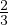
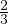

Võrre on võrdus, mille mõlemal poolel on suhted ehk jagatised. Näiteks
 = .
Võrde põhiomaduseks on see, et jagatisena esitatud võrduse korral on
diagonaalide korrutised võrdsed. Näiteks  = näeme, et 2 ⋅ 6 = 3 ⋅ 4.
Võrdekujuliseks võrrandiks nimetatakse võrdust, mis on võrde kujul ja mille üks
liige on tundmatu. Näiteks = . Niisuguse võrrandi lahendamiseks kasutatakse
võrde põhiomadust 2 ⋅ x = 3 ⋅ 4 ehk 2 ⋅ x = 12 ehk x = 6.
Võrde põhiomadust kutsutakse mõnikord ka ristkorrutiseks.